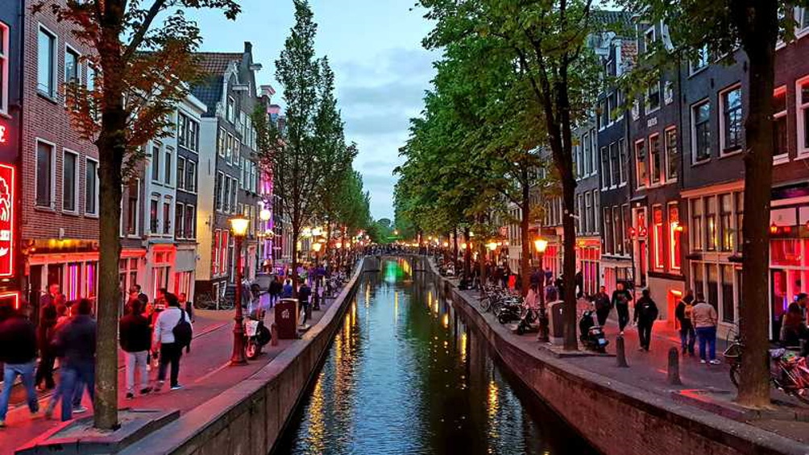

Klikkaa kuvia nähdäksesi tiedot!
Lontoo
Danielin kertomusKävin Lontoossa pari vuotta sitten kesäloman aikana. Lontoo tuntui pikkuisen ankealta. Mutta muuten ihan mukava. Aurinko ei oikein paistanut, kun itse olin siellä. London eye oli tosi hauska.+Hyvät ruuat-Ankea paikka-Ryöstäjiä Eliaksen kertomusKäytiin Lontoossa vuonna 2018. Lontoo oli ihan mukava paikka, aurinko paistoi ja harvoin satoi. Ruoka oli ihan hyvää ja nähtävyydet oli kauniita, mutta oli hyvin ruuhkaista ja äänekästä. Tosi paljon hyviä museoita esim. IWM ja voit päästä katsomaa HMS Belfast laivaa, sisältä ja ulkoolta.
">
×

Praha
Danielin kertomusKävin Prahassa kesäloman aikana. Praha oli mielenkiintoinen paikka. Siellä oli tosi paljon historiallisia juttuja. Siellä oli yli 30°C joten vietin aikaa enemmän sisällä. Kaikki olivat tosi ystävällisiä.
Praha oli tosi mukava paikka ja kokemus siellä oli tosi hyvä. +Mielenkiintoinen paikka ja tosi monia historiallisia juttuja +Ihmiset olivat ystävällisiä +Hyvät ruuat -Tosi kuuma kesällä ">
×

Pietari
Valtterin kertomusKävin Pietarissa Syysloman aikana, jolloin sanotaan Pietarin olevan kauneimmillaan. Lukuisat vanhan tuntuiset rakennukset olivat niin hienoja jo itsessään, että oikeat nähtävyydet alkoivat tuntua vähän heikolta, varsinkin tämä yksi kahvila Pietarin pääkadulla oli todella hienosti koristeltu 1800 luvun tunnelmallisilla kalustoilla, ja myös tarjosi parvekkeen mistä pystyi nähdä helposti melkein koko tien. Ruuasta ei surullisesti voi kovin samanlaisia sanoja sanoa. Kerjäläiset ja myyjät olivat melkein yhtä aggressiivisia, että joskus en ollut edes varma kumpi oli kyseessä. Mutta kokonaisuutena Pietari oli kaunis kaupunki, jossa oli paljon koettavaa.+Hienoja rakennuksia ja paljon kävelymatkaa+Todella hyvät hotellit-Kerjäläiset olivat liian aggressiivisia-Vähän kommunikaatio ongelmia ">
×

Amsterdam
Valtterin kertomusAmsterdam on ehkäpä stereotyyppisin eurooppalainen kaupunki mikä voi olla, ei varmaan edes tarvitse selittää mitä siellä on, koska suurimmalta osalta se tiedetään jo. Amsterdamissa selviytyy erinomaisesti englannin kanssa, kuulin vitsejäkin siitä, että englanti oli korvannut hollannin kielen pää kielenä siellä. Hotellimme oli todella vaatimaton, sellainen pieni kulma kahvila, joka toimi myös hotellina, mutta siitä tuli kyllä todella hyvä tunnelma. Ruoka oli aika vaatimatonta myös mutta ei se mitään huonoakaan ollut. Amsterdam oli todella hieno kaupunki ja suosittelisin sitä kaikille ainakin kahden päivän lomakohteeksi. +Rakennukset ovat kauniita +Hyvät ratikka yhteydet koko kaupungissa+Englantia osataan laajasti-Todella kallista ruokaa, täytyy etsiä vähän syvemmältä, että saisi halvemmalla -Kannabis tuoksuu aika kovasti tietyissä kahviloissa joissa käyttö on sallittua sisällä ">
×

Berliini
Valtterin kertomusAmsterdam on ehkäpä stereotyyppisin eurooppalainen kaupunki mikä voi olla, ei varmaan edes tarvitse selittää mitä siellä on, koska suurimmalta osalta se tiedetään jo. Amsterdamissa selviytyy erinomaisesti englannin kanssa, kuulin vitsejäkin siitä, että englanti oli korvannut hollannin kielen pää kielenä siellä. Hotellimme oli todella vaatimaton, sellainen pieni kulma kahvila, joka toimi myös hotellina, mutta siitä tuli kyllä todella hyvä tunnelma. Ruoka oli aika vaatimatonta myös mutta ei se mitään huonoakaan ollut. Amsterdam oli todella hieno kaupunki ja suosittelisin sitä kaikille ainakin kahden päivän lomakohteeksi. +Rakennukset ovat kauniita +Hyvät ratikka yhteydet koko kaupungissa+Englantia osataan laajasti-Todella kallista ruokaa, täytyy etsiä vähän syvemmältä, että saisi halvemmalla -Kannabis tuoksuu aika kovasti tietyissä kahviloissa joissa käyttö on sallittua sisällä ">
×